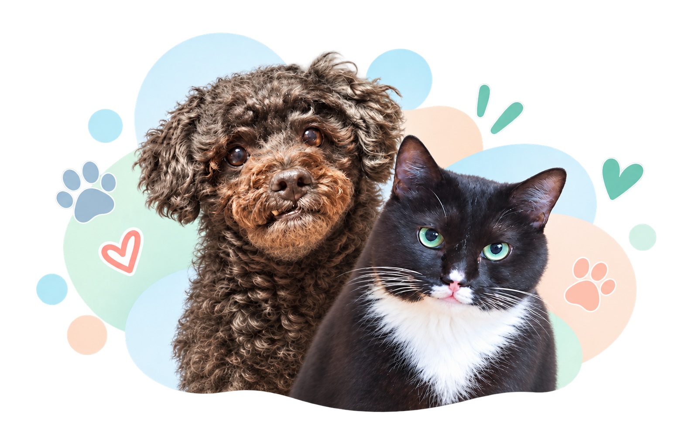

공식 제품정보와 검증
Seed Catalog를 불러옵니다.
BETTER FOOD. HAPPIER PETS.
우리 애 사료,
뭐가 찐일까?
여러 사료의 공식 제품정보, 영양성분, 제조사 강조 정보, 구매후기 데이터를 바탕으로 현재 조건에 상대적으로 잘 맞는 후보를 비교해보세요.
사료 비교 시작하기 →
✓
신뢰할 수 있는
공식 데이터 기반
공식 데이터 기반
객관적인
비교 분석
비교 분석
♥
우리 아이에게 더
건강한 선택
건강한 선택

COMPARE
사료 비교
우리 아이의 정보를 선택하고, 여러 사료를 한눈에 비교해보세요.
🐾
작은 선택이
큰 변화를 만듭니다 ♡
HOW IT WORKS
어떻게 비교하나요?
간단한 5단계 로 우리 아이에게 더 잘 맞는 사료를 찾아보세요.
반려동물의 나이와
관심사항을 확인합니다.
영양표 기준이 같은 항목만
직접 비교합니다.
제조사 강조 정보와
구매후기 경험을 보여줍니다.
AI가 위 사실을 바탕으로
쉬운 설명을 생성합니다.
ABOUT
서비스 안내
‘우리 애 사료, 뭐가 찐일까?’는 여러 사료 중 우리 아이의 현재 조건에 상대적으로 잘 맞는 후보를 비교하기 위한 서비스입니다.
질병 진단이나 처방사료 추천을 제공하지 않습니다.
질병이 있거나 치료 중인 반려동물의 사료 선택은 수의사와 상담하세요.
사료 비교 다시 하기 →